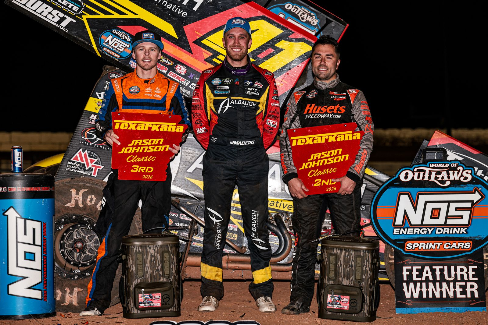

Carson Macedo Wins Jason Johnson Classic at Texarkana
Macedo passed David Gravel in the closing laps and won by 1.111 seconds.

Carson Macedo won the Jason Johnson Classic presented by FK Rod Ends on Friday, Oct. 23, at Texarkana 67 Speedway in Texarkana, Ark. The 41-lap World of Outlaws 410 feature paid $20,000 to win.
After a restart with about six laps to go, Macedo and David Gravel traded a slide job and crossover before Macedo ripped the cushion to get past Gravel. Macedo won by 1.111 seconds.
It was Macedo’s 7th win of 2026 and the 65th World of Outlaws win of his career. It was the second Jason Johnson Classic win for Jason Johnson Racing; Gravel won the inaugural event for the team in 2019.
Top 5: 1. Carson Macedo, 2. David Gravel, 3. Sheldon Haudenschild, 4. Cole Macedo, 5. Michael Kofoid.